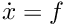
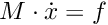
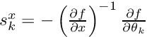

- Generated on Fri Aug 7 2020 23:28:14 for AMICI by
 1.8.18
1.8.18
|
AMICI
Advanced Multilanguage Interface for CVODES and IDAS
|
In the following we will give a detailed overview how to specify models in MATLAB and how to call the generated simulation files.
This guide will guide the user on how to specify models in MATLAB. For example implementations see the examples in the matlab/examples directory.
The model definition needs to be defined as a function which returns a struct with all symbolic definitions and options.
function [model] = example_model_syms()
Set the options by specifying the respective field of the modelstruct
model.(fieldname) = value
The options specify default options for simulation, parametrisation and compilation. All of these options are optional.
| field | description | default |
|---|---|---|
| .param | default parametrisation 'log'/'log10'/'lin' | 'lin' |
| .debug | flag to compile with debug symbols | false |
| .forward | flag to activate forward sensitivities | true |
| .adjoint | flag to activate adjoint sensitivities | true |
When set to false, the fields 'forward' and 'adjoint' will speed up the time required to compile the model but also disable the respective sensitivity computation.
Create the respective symbolic variables. The name of the symbolic variable can be chosen arbitrarily.
syms state1 state2 state3
Create the state vector containing all states:
model.sym.x = [ state1 state2 state3 ];
Create the respective symbolic variables. The name of the symbolic variable can be chosen arbitrarily. Sensitivities will be derived for all paramaters.
syms param1 param2 param3 param4 param5 param6
Create the parameters vector
model.sym.p = [ param1 param2 param3 param4 param5 param6 ];
Create the respective symbolic variables. The name of the symbolic variable can be chosen arbitrarily. Sensitivities with respect to constants will not be derived.
syms const1 const2
Create the parameters vector
model.sym.k = [ const1 const2 ];
For time-dependent differential equations you can specify a symbolic variable for time. This needs to be denoted by t.
syms t
Specify the right hand side of the differential equation f or xdot
model.sym.xdot(1) = [ const1 - param1*state1 ]; model.sym.xdot(2) = [ +param2*state1 + dirac(t-param3) - const2*state2 ]; model.sym.xdot(3) = [ param4*state2 ];
or
model.sym.f(1) = [ const1 - param1*state1 ]; model.sym.f(2) = [ +param2*state1 + dirac(t-param3) - const2*state2 ]; model.sym.f(3) = [ param4*state2 ];
The specification of f or xdot may depend on states, parameters and constants.
For DAEs also specify the mass matrix.
model.sym.M = [1, 0, 0;...
0, 1, 0;...
0, 0, 0];
The specification of M may depend on parameters and constants.
For ODEs the integrator will solve the equation  and for DAEs the equations . AMICI will decide whether to use CVODES (for ODEs) or IDAS (for DAEs) based on whether the mass matrix is defined or not.
In the definition of the differential equation you can use certain symbolic functions. For a full list of available functions see src/symbolic_functions.cpp.
Dirac functions can be used to cause a jump in the respective states at the specified time-point. This is typically used to model injections, or other external stimuli. Spline functions can be used to model time/state dependent response with unkown time/state dependence.
Specify the initial conditions. These may depend on parameters on constants and must have the same size as x.
model.sym.x0 = [ param4, 0, 0 ];
Specify the observables. These may depend on parameters and constants.
model.sym.y(1) = state1 + state2; model.sym.y(2) = state3 - state2;
In the definition of the observable you can use certain symbolic functions. For a full list of available functions see src/symbolic_functions.cpp. Dirac functions in observables will have no effect.
Specifying events is optional. Events are specified in terms of a trigger function, a bolus fuction and an output function. The roots of the trigger function defines the occurences of the event. The bolus function defines the change in the state on event occurences. The output function defines the expression which is evaluated and reported by the simulation routine on every event occurence. The user can create events by constructing a vector of objects of the class amievent.
model.sym.event(1) = amievent(state1 - state2,0,[]);
Events may depend on states, parameters and constants but not on observables.
For more details about event support see https://doi.org/10.1093/bioinformatics/btw764
Specifying standard deviations is optional. It only has an effect when computing adjoint sensitivities. It allows the user to specify standard deviations of experimental data for observables and events.
Standard deviaton for observable data is denoted by sigma_y
model.sym.sigma_y(1) = param5;
Standard deviaton for event data is denoted by sigma_t
model.sym.sigma_t(1) = param6;
Both sigma_y and sigma_t can either be a scalar or of the same dimension as the observables / events function. They can depend on time and parameters but must not depend on the states or observables. The values provided in sigma_y and sigma_t will only be used if the value in D.Sigma_Y or D.Sigma_T in the user-provided data struct is NaN. See simulation for details.
By default, AMICI assumes a normal noise model and uses the corresponding negative log-likelihood
J = 1/2*sum(((y_i(t)-my_ti)/sigma_y_i)^2 + log(2*pi*sigma_y^2)
as objective function. A user provided objective function can be specified in
model.sym.Jy
As reference see the default specification of this.sym.Jy in amimodel.makeSyms.
AMICI can also import SBML models using the command SBML2AMICI. This will generate a model specification as described above, which may be edited by the user to apply further changes.
The model can then be compiled by calling amiwrap.m:
amiwrap(modelname,'example_model_syms',dir,o2flag)
Here modelname should be a string defining the name of the model, dir should be a string containing the path to the directory in which simulation files should be placed and o2flag is a flag indicating whether second order sensitivities should also be compiled. The user should make sure that the previously defined function ‘'example_model_syms’is in the user path. Alternatively, the user can also call the function'example_model_syms'`
[model] = example_model_syms()
and subsequently provide the generated struct to amiwrap(...), instead of providing the symbolic function:
amiwrap(modelname,model,dir,o2flag)
In a similar fashion, the user could also generate multiple models and pass them directly to amiwrap(...) without generating respective model definition scripts.
Due to better performance or to avoid the Symbolic Toolbox requirement, it might be desirable to import a model in Python and compile the resulting code into a mex file. For Python model import, consult the respective section of the Python documentation. Once the imported succeeded, there will be a compileMexFile.m script inside the newly created model directory which can be invoked to compile the mex file. This mex file and simulate_*.m can be used as if fully created by matlab.
With recent matlab versions it is possible to use the AMICI python package from within Matlab. This not quite comfortable yet, but it is possible.
Here for proof of concept:
pyversion shows the correct python version (3.6 or 3.7)Then, from within the AMICI matlab/ directory:
``‘ sbml_importer = py.amici.SbmlImporter(’../python/examples/example_steadystate/model_steadystate_scaled.xml') sbml_importer.sbml2amici('steadystate', 'steadystate_example_from_python') model = py.steadystate.getModel() solver = model.getSolver() model.setTimepoints(linspace(0, 50, 51)) rdata = py.amici.runAmiciSimulation(model, solver) result = struct(py.dict(rdata.items())) t = double(py.array.array('d', result.ts)) x = double(py.array.array('d', result.x.flatten())) x = reshape(x, flip(double(py.array.array('d', result.x.shape)))) plot(t, x) ```
After the call to amiwrap(...) two files will be placed in the specified directory. One is a modelname.mex and the other is simulate_ modelname.m. The mex file should never be called directly. Instead the MATLAB script, which acts as a wrapper around the .mex simulation file should be used.
The simulate_ modelname.m itself carries extensive documentation on how to call the function, what it returns and what additional options can be specified. In the following we will give a short overview of possible function calls.
Define a time vector:
t = linspace(0,10,100)
Generate a parameter vector:
theta = ones(6,1);
Generate a constants vector:
kappa = ones(2,1);
Integrate:
sol = simulate_modelname(t,theta,kappa,[],options)
The integration status will be indicated by the sol.status flag. Negative values indicated failed integration. The states will then be available as sol.x. The observables will then be available as sol.y. The event outputs will then be available as sol.z. If no event occured there will be an event at the end of the considered interval with the final value of the root function is stored in sol.rz.
Alternatively the integration can also be called via
[status,t,x,y] = simulate_modelname(t,theta,kappa,[],options)
The integration status will be indicated by the flag status . Negative values indicated failed integration. The states will then be available as x. The observables will then be available as y. No event output will be given.
Set the sensitivity computation to forward sensitivities and integrate:
options.sensi = 1; options.sensi_meth = 'forward; sol = simulate_modelname(t,theta,kappa,[],options)
The integration status will be indicated by the sol.status flag. Negative values indicate failed integration. The states will be available as sol.x, with the derivative with respect to the parameters in sol.sx. The observables will be available as sol.y, with the derivative with respect to the parameters in sol.sy. The event outputs will be available as sol.z, with the derivative with respect to the parameters in sol.sz. If no event occured there will be an event at the end of the considered interval with the final value of the root function stored in sol.rz, with the derivative with respect to the parameters in sol.srz.
Alternatively the integration can also be called via
[status,t,x,y,sx,sy] = simulate_modelname(t,theta,kappa,[],options)
The integration status will be indicated by the status flag. Negative values indicate failed integration. The states will then be available as x, with derivative with respect to the parameters in sx. The observables will then be available as y, with derivative with respect to the parameters in sy. No event output will be given.
Set the sensitivity computation to adjoint sensitivities:
options.sensi = 1; options.sensi_meth = 'adjoint';
Define Experimental Data:
D.Y = [NaN(1,2)],ones(length(t)-1,2)]; D.Sigma_Y = [0.1*ones(length(t)-1,2),NaN(1,2)]; D.T = ones(1,1); D.Sigma_T = NaN;
The NaN values in Sigma_Y and Sigma_T will be replaced by the specification in model.sym.sigma_y and model.sym.sigma_t. Data points with NaN value will be completely ignored.
Integrate:
sol = simulate_modelname(t,theta,kappa,D,options)
The integration status will be indicated by the sol.status flag. Negative values indicate failed integration. The log-likelihood will then be available as sol.llh and the derivative with respect to the parameters in sol.sllh. Notice that for adjoint sensitivities no state, observable and event sensitivities will be available. Yet this approach can be expected to be significantly faster for systems with a large number of parameters.
This will compute state sensitivities according to the formula 
In the current implementation this formulation does not allow for conservation laws as this would result in a singular Jacobian.
Set the final timepoint as infinity, this will indicate the solver to compute the steadystate:
t = Inf;
Set the sensitivity computation to steady state sensitivities:
options.sensi = 1;
Integrate:
sol = simulate_modelname(t,theta,kappa,D,options)
The states will be available as sol.x, with the derivative with respect to the parameters in sol.sx. The observables will be available as sol.y, with the derivative with respect to the parameters in sol.sy. Notice that for steady state sensitivities no event sensitivities will be available. For the accuracy of the computed derivatives it is essential that the system is sufficiently close to a steady state. This can be checked by examining the right hand side of the system at the final time-point via sol.diagnosis.xdot.
1.8.18